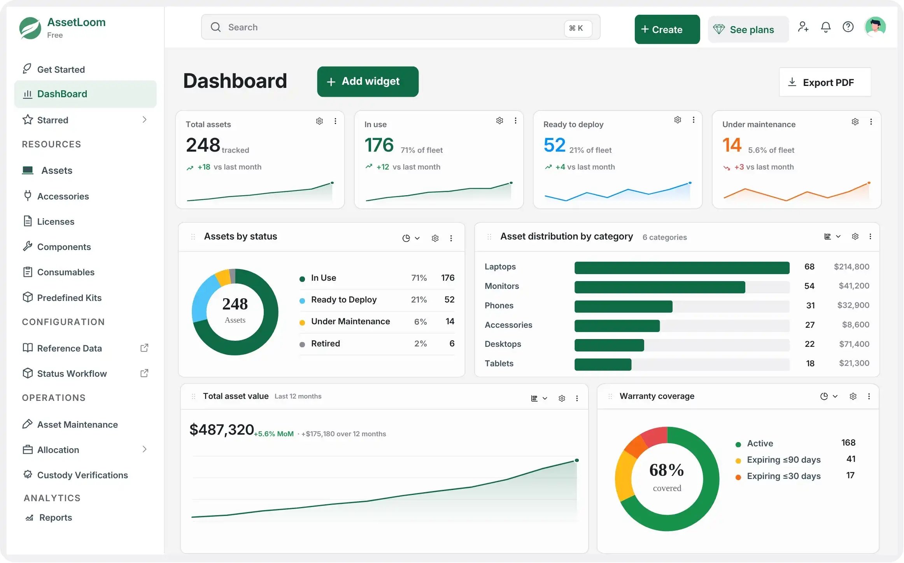

Linux
x86-64 / AMD64
DownloadFree network scanner
Run agentless IT asset discovery from Windows, macOS, or Linux. Find IP and MAC addresses, hostnames, vendors, open ports, device types, and discovery evidence without installing endpoint agents.
No credit card Local CSV and JSON Windows, macOS, Linux
Download
Choose the build for the computer that will run the scan. Keep the scanner on a trusted system with network access to the ranges you are authorized to inspect.
x86-64 / AMD64
DownloadARM64 / AArch64
DownloadIntel processor
DownloadApple silicon
Downloadx86-64 / AMD64
Downloaddfd2b04c54693f299ffb78d843108ceffeeed0a027b1efe929eec42bd15839a05d25c7a756f91be3c4c1e4f32548cd566e25a3ffeb617513d75eccafee0b6e518f3e3115313b278efec3604a85db8c3c4bcc65754cb287d7b87e218939b267630861a51b44ba5edc2ee2038c86771f852753c1c82fc6222e3363b0a4269fdcd6530bc6d946f84805e9fc3cedbf3381556becf9479b584b84490fc78aeacc888d0fb06195b27e513479f2e036b381c00c6840959575d6d8fa54d32a8eb5736ee04cd3a0bdb7c37b1487c94483c79a39af03e59e7c4a10e37d00fcd26fd4f998beIT asset discovery
Discover reachable assets, correlate network evidence, and keep the method status behind each result visible for review.
Find active devices with local ARP, ICMP, TCP, DNS, NetBIOS, and mDNS discovery across approved network ranges.
Correlate IP and MAC addresses, hostnames, hostname sources, and OUI vendor data into one record per discovered device.
Find devices that ignore ICMP when they still respond to local ARP or selected, bounded TCP probes.
Record selected reachable TCP ports as supporting evidence without turning discovery into an unrestricted port scan.
Combine vendor, hostname, TTL, and open-port evidence to classify workstations, servers, printers, switches, and other device types.
Keep scan output local in structured JSON for automation or CSV for review, reporting, and import into your existing workflows.
# Generate a documented starter configuration
$ assetloom-scanner --init-config ./config.json
Configuration created: ./config.json
# Validate the target and configuration
$ assetloom-scanner --config ./config.json --dry-run
Validation complete: 192.168.1.0/24 approved
# Discover and inventory devices
$ assetloom-scanner --config ./config.json --output json
Network scan started range=192.168.1.0/24
Scan complete devices=42 output=scan-results.json
Transparent workflow
The command-line scanner is designed for repeatable local operation and clear automation.
Select your platform build and compare its SHA-256 checksum before installation.
Generate the starter JSON file, then define the network range and protocol settings.
Use dry-run validation to review configuration and target safety without sending probes.
Run discovery, classify the results, then open the local CSV or JSON inventory.
Built for responsible discovery
Network discovery is powerful. The scanner keeps scope explicit, protocol work bounded, output local, and evidence visible so operators can scan with informed authorization.
Configurable timeouts, concurrency, rate limits, and cancellation keep protocol work controlled.
Range validation and explicit overrides help prevent accidental scans outside the intended environment.
Version 1.0.1 does not require stored remote-management credentials or upload scan results to a cloud service.
Method statuses, limitations, and confidence make incomplete or inferred results easier to evaluate.
One device record
Correlated findings reduce duplicate records and preserve the protocol sources behind important fields.
| Category | Example inventory fields | Evidence sources |
|---|---|---|
| Identity | IP address, hostname, hostname source, MAC address, and OUI vendor | ARP DNS NetBIOS mDNS |
| Classification | Device type, optional subtype, matched rule, confidence, and confidence score | Vendor Hostname Ports TTL |
| Network evidence | Open ports, response time, TTL, discovery source, and liveness methods | ICMP ARP TCP |
| Method status | Protocol outcome, reason, limitation, duration, and discovery-limited state | Protocol status Limitations |
| Scan metadata | Scan ID, first seen, last seen, and discovered-by evidence | Scanner |
From discovery to lifecycle management
The scanner shows what is connected. AssetLoom helps your team manage what happens next by centralizing asset records, ownership, assignments, maintenance, software licenses, and lifecycle activity.

Frequently asked questions
Practical answers for IT teams evaluating local network and asset discovery.
It is a command-line network scanner for agentless IT asset discovery. It discovers reachable devices, resolves available network identity, classifies the results, and exports a normalized inventory to local CSV or JSON files.
Yes. The local scanner download is free to use and does not require a credit card. AssetLoom Cloud is a separate product for teams that want centralized asset operations and lifecycle management.
No. The scanner is agentless. Version 1.0.1 uses ICMP, ARP, selected TCP probes, reverse DNS, NetBIOS, and mDNS without installing software on the devices being discovered.
It can find workstations, laptops, servers, virtual machines, printers, switches, routers, access points, phones, tablets, storage devices, and other IPv4-connected equipment. Classification depth depends on reachability and the network evidence each device exposes.
No. Version 1.0.1 has no cloud integration. Scan results are written only to the local CSV or JSON output path you choose.
Not in version 1.0.1. The current release focuses on network discovery, identity evidence, open ports, and device classification. Credentialed hardware, operating-system, and software inventory belongs to a later scanner release.
It can scan configured ranges that are reachable from the scanner host. ARP is limited to the local Layer 2 network, while routed discovery uses supported IP protocols. Only scan networks you own or are explicitly authorized to assess.
Some discovery methods and operating systems require elevated privileges for raw packet access. The scanner reports capability limitations and can still use available methods when a privileged method is unavailable.
Download the free scanner, discover your network, and turn scattered device evidence into structured asset records.